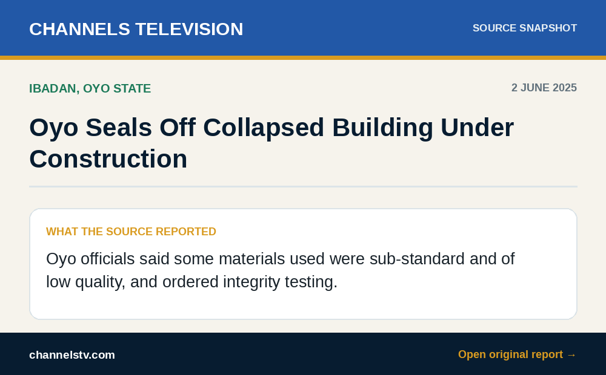

MATERIAL QUALITY · IBADANRead original report ↗
The materials were already built in by the time anyone tested them.
Catching that gap earlier, while it can still be corrected, is what a materials and workmanship check is for.
TAJ RELEVANCEMaterials & workmanship control
- Specified versus delivered materials and available records
- Visible workmanship before work is concealed
- Testing or specialist review requirements
- Open non-conformances requiring action